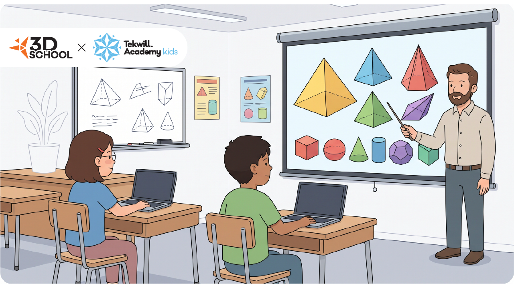
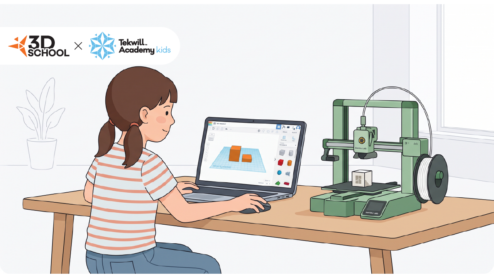
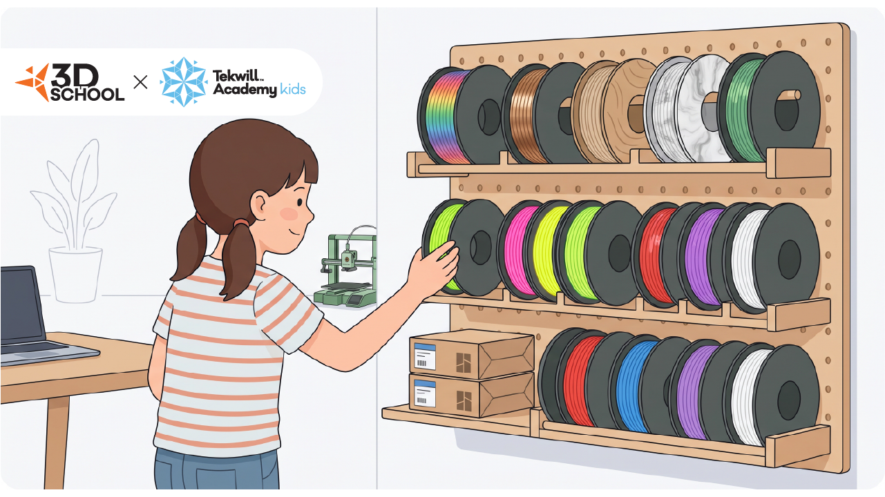
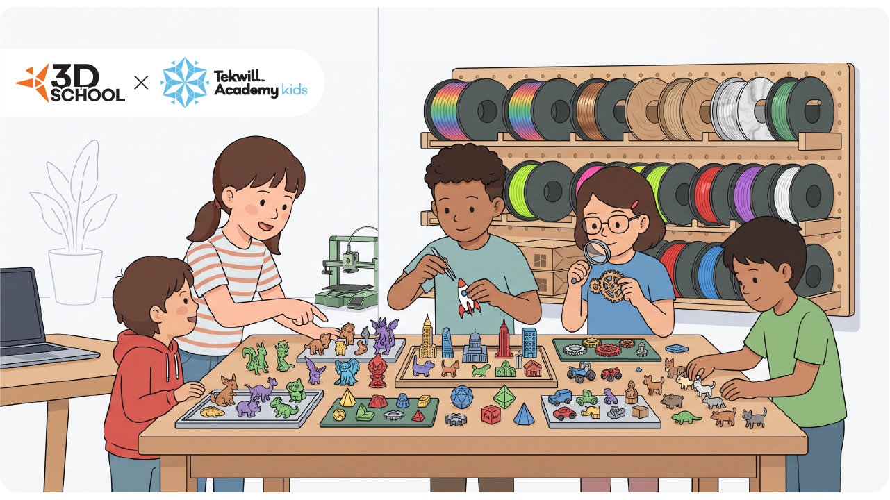

✕
✕
 ✕
✕
Nu este despre inginerie grea! Este despre curiozitate, cultură generală și bucuria de a da viață ideilor pe imprimanta 3D.
O experiență plină de fascinație unde copiii învață noțiuni din lumea reală (istorie, natură, spațiu, arhitectură) și le transformă în forme tridimensionale. La FIECARE lecție, copiii 3D printează și iau acasă un obiect creat de ei!
Fluxul unei ședințe de 2 ore: structurat, eficient și captivant
Recapitulare, pregătire fișiere și pornirea celor 4 imprimante 3D.
Teorie interactivă și discutarea noului concept al zilei.
Timp pentru relaxare, gustare și socializare offline.
Profesorul arată pas cu pas noua abilitate de modelare.
Copiii modelează propriul design aplicând noile noțiuni.
Colectare printuri, poza de grup și plecare cu obiectele acasă.
Parcurgem 4 etape simple la fiecare ședință: copiii modelează, printează și pleacă acasă cu obiectul creat!




* Notă: Imaginile de mai sus sunt exemple vizuale demonstrative ale proiectelor și obiectelor realizate.
TAK 3D School oferă cursuri interactive de modelare și printare 3D pentru copii. Învățăm să gândim în spațiu, să proiectăm mecanisme și să le dăm viață direct pe imprimantă.
Durată Curs
Ani
Minute per Ședință
Beneficii reale pentru copii și rezultate vizibile pentru părinți
Obiect nou adus acasă la fiecare ședință.
Dezvoltă logica matematică și răbdarea.
Învățare pe softuri 3D profesionale.
Spinnere, jucării și piese personalizate.
Echipă pasionată și poză săptămânală.
Lucru direct pe imprimante 3D reale.
Fluxul unei ședințe de 2 ore: structurat, eficient și captivant
Recapitulare, pregătire fișiere și pornirea celor 4 imprimante 3D.
Teorie interactivă și discutarea noului concept al zilei.
Timp pentru relaxare, gustare și socializare offline.
Profesorul arată pas cu pas noua abilitate de modelare.
Copiii modelează propriul design aplicând noile noțiuni.
Colectare printuri, poza de grup și plecare cu obiectele acasă.
Pe parcursul cursului, elevii explorează 4 roluri fascinante: de la artă digitală și inginerie de produs, până la arhitectură și modelare științifică. Apasă pe fiecare profesie pentru a descoperi ce învață și ce creează!
Învață: Bazele spațiului 3D.
Creează: Ecusoane, pixel art, brelocuri personalizate.

Învață: Ingineria interacțiunii mecanice.
Creează: Spinnere, jucării antistres, piese de șah.

Învață: Scara, proporțiile, geometria clădirilor.
Creează: Burj Khalifa, Arcul de Triumf, Turnul din Pisa.

Învață: Modelarea organică și științifică.
Creează: Insecte detaliate, cranii de dinozaur, structuri celulare.


Specialist în modelare digitală și inginerie STEM cu o experiență de peste 6 ani în utilizarea tehnologiilor de printare 3D. Andrian ghidează elevii pas cu pas de la noțiunile de bază de modelare până la realizarea practică a mecanismelor mobile complexe.
Iată o mostră a obiectelor 3D realizate pe parcursul celor 4 profesii: de la pixel art și spinnere funcționale, la piese de șah, machete de arhitectură și modele științifice!
* Notă: Imaginile de mai sus sunt exemple vizuale demonstrative ale proiectelor și obiectelor realizate.
Această secțiune explică sistemul nostru de cohorte și modul de admitere.
Grupele noastre funcționează sub formă de cohortă. Asta înseamnă că o echipă începe și termină cursul împreună, creând o dinamică excelentă de grup.
Noi elevi sunt acceptați doar la începutul fiecărui nou modul (Profesie) și doar în limita locurilor eliberate. Astfel, ne asigurăm că nimeni nu rămâne în urmă cu materia.
Transformă imaginația în obiecte reale!
Acesta nu este doar un curs de calculator, ci o experiență STEM completă în care copiii încetează să mai fie simpli consumatori de tehnologie și devin creatori activi.
Datorită structurii noastre adaptate, copiii pleacă acasă la finalul fiecărei ședințe cu obiectul fizic pe care l-au proiectat singuri.
Împingem Tinkercad la potențialul maxim prin modele 3D complexe, cote de precizie și mecanisme articulate. În paralel, desfășurăm lecții bonus speciale în Fusion 360, Blender, electronică, debitare laser și scanare 3D.
Stoarcem 100% din potențialul Tinkercad și oferim o primă experiență practică cu softurile și echipamentele de top din industrie!
Modelare avansată, combinarea creativă a uneltelor, operațiuni geometrice complexe și proiectare fără limite.
Ateliere introductive în modelarea parametrică industrială (Fusion 360) și sculptura digitală organică (Blender).
Integrarea de senzori și circuite în carcase 3D (Tinkercad Circuits) și noțiuni de proiectare pentru debitare laser.
Digitalizarea obiectelor din lumea reală prin scanare 3D și stăpânirea parametrilor avansați de printare în slicer.
Durată Curs
Ani
Minute per Ședință
Abilități digitale de viitor, flexibilitate în proiectare și gândire inginerească
Elevii realizează proiecte 3D complexe și funcționale, dovedind stăpânirea tehnicilor de nivel avansat.
Învață să depășească limitările oricărui soft prin combinarea inteligentă a uneltelor și optimizare geometrice.
Contact direct cu ecosistemul modern: Fusion 360, Blender, electronică, debitare laser și scanare 3D.
Libertate totală de a construi mecanisme articulate, carcase de precizie și structuri tridimensionale spectaculoase.
Lucru în grupe mici, schimb de idei și colaborare pe proiecte de inginerie și design 3D.
Proiecte fizice reale: piese printate 3D, carcase cu LED-uri/senzori, obiecte scanate și machete debitate laser.
Structura unei ședințe avansate: echilibru perfect între teorie, demonstrație și creație practică
Pregătirea fișierelor 3D, verificarea parametrilor de printare și lansarea obiectelor pe imprimante.
Analiza proiectului zilei, schițe cotate și înțelegerea toleranțelor de îmbinare.
Timp pentru relaxare, gustare și schimb informal de idei tehnice.
Profesorul explică tehnici complexe de modelare Tinkercad sau atelierele bonus pe softuri noi.
Elevii construiesc propriile modele 3D complexe, aplicațiile fiind ghidate pas cu pas de mentor.
Testarea fizică a toleranțelor, asamblarea componentelor și prezentarea rezultatelor.
Parcurgem cele 4 direcții esențiale din industrie, împingând Tinkercad la nivelul maxim de complexitate și adăugând lecții bonus cu tehnologii profesionale!
Învață: Modelare tehnică de precizie în Tinkercad, combinarea avansată a uneltelor,
cote tehnice și toleranțe de îmbinare. (Bonus: Inițiere în CAD Parametric cu Fusion 360).
Creează: Ansambluri mecanice potrivite la milimetru, angrenaje, carcase tehnice și
mecanisme articulate.
Învață: Design industrial și ergonomie de produs în Tinkercad. (Bonus: Integrare de
circuite electronice și senzori în Tinkercad Circuits).
Creează: Gadgeturi funcționale, spinnere inginerești, piese de șah și accesorii
interactive.
Învață: Geometrie spațială, scară, proporții și structuri arhitecturale modulare în
Tinkercad. (Bonus: Proiectare 2D pentru debitare laser).
Creează: Machete de zgârie-nori, turnuri futuriste, poduri rezistente și structuri
arhitecturale complexe.
Învață: Modelare organică complexă în Tinkercad prin combinare creativă de geometrii.
(Bonus: Sculptură 3D în Blender & Scanare 3D).
Creează: Modele anatomice, cranii de dinozaur, personaje și obiecte reale transpuse
prin scanare 3D.
Specialist în modelare digitală și inginerie STEM cu o experiență de peste 6 ani în utilizarea tehnologiilor de printare 3D. Andrian ghidează elevii pas cu pas de la noțiunile de bază de modelare până la realizarea practică a mecanismelor mobile complexe.
Iată o mostră a obiectelor 3D realizate de elevii din nivelul avansat: mecanisme de angrenaj, carcase tehnice, machete de arhitectură detaliate, proiecte cu circuite electronice și modele scanate 3D!
* Notă: Imaginile de mai sus sunt exemple vizuale demonstrative ale proiectelor și obiectelor realizate.
Această secțiune explică sistemul nostru de cohorte și modul de admitere.
Grupele noastre funcționează sub formă de cohortă. Asta înseamnă că o echipă începe și termină cursul împreună, creând o dinamică excelentă de grup.
Noi elevi sunt acceptați doar la începutul fiecărui nou modul (Specializare) și doar în limita locurilor eliberate. Astfel, ne asigurăm că nimeni nu rămâne în urmă cu materia.